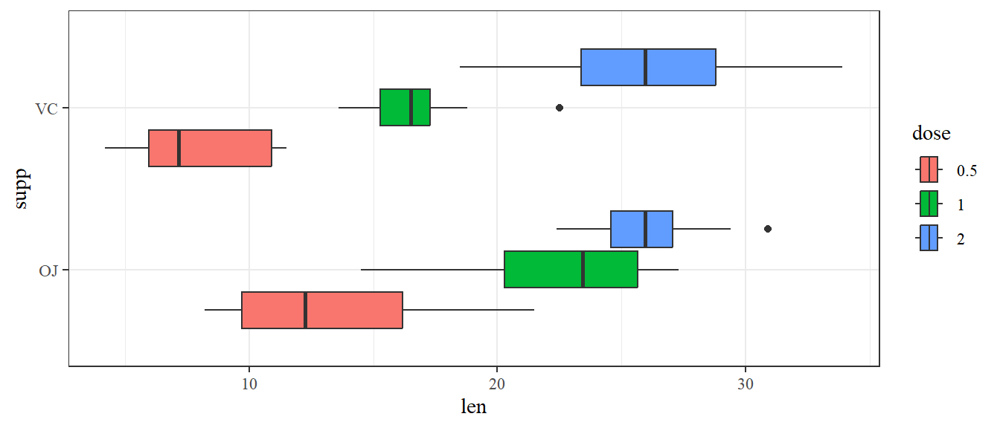
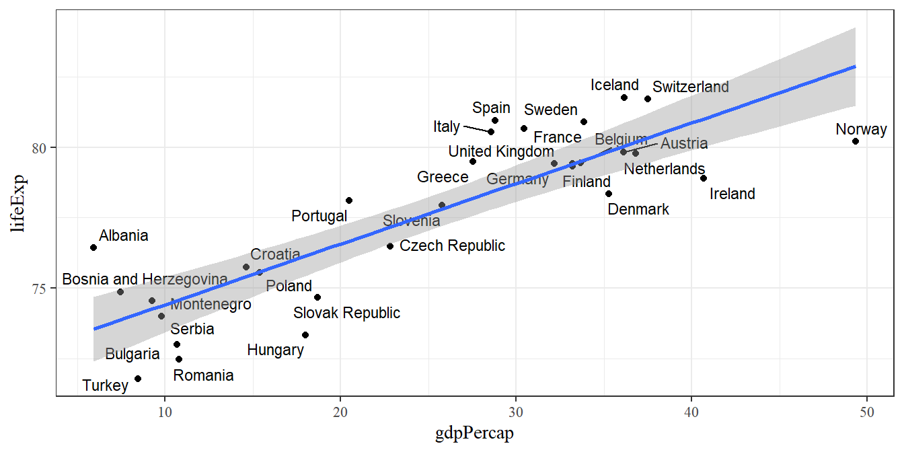
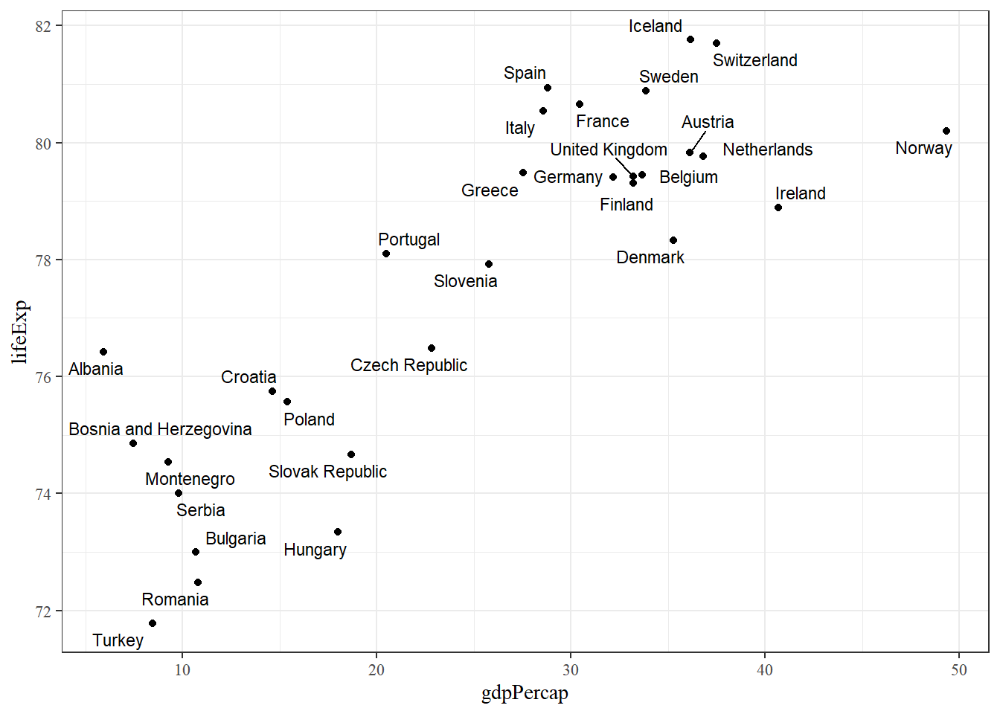
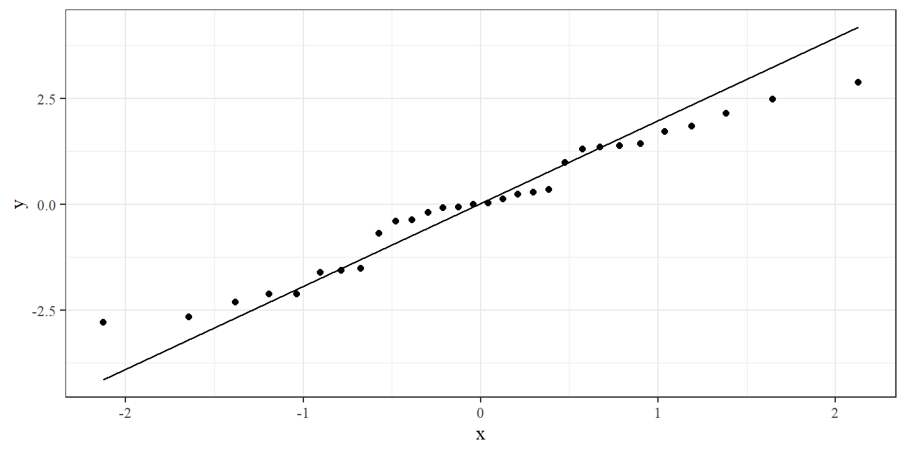
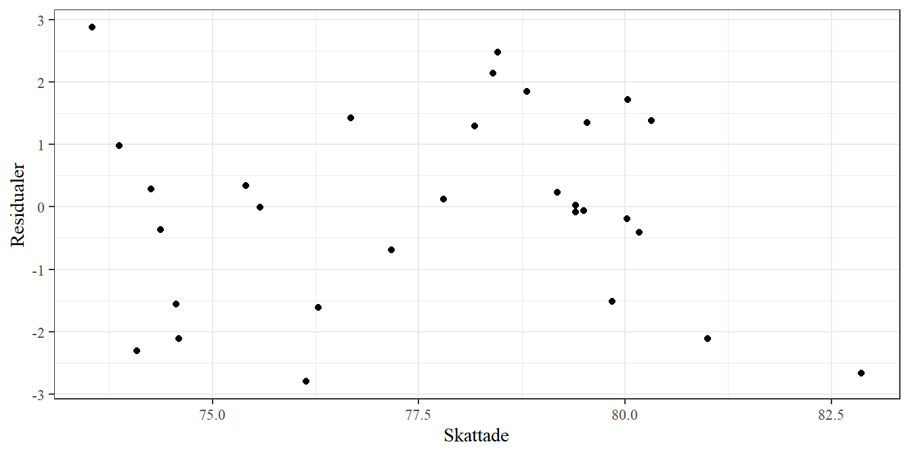

7 Regression och korrelation
Datorövning 7 handlar om regression och korrelation. Efter övningen ska vi kunna
skatta en regressionsmodell i R,
testa parametrar i modellen med F-test och t-test,
göra lämpliga tester av modellantaganden,
beräkna och tolka korrelationen mellan två variabler.
7.1 Repetition av datorövning 6
När man startar en ny R-session bör man ladda de paket man vet kommer behövas med library(). Om paket inte finns installerade måste man först köra install.packages().
I datorövning 7 tittade vi på variansanalys - en metod som gör det möjligt att utvidga t-testet för två grupper till ett godtyckligt antal grupper eller kombinationer av faktorer. I variansanalys skattar man en modell som förklarar ett datautfall. Utifrån modellen sätter man upp en anova-tabell som delar upp den totala variansen i en förklarad del och en kvarvarande residualdel. Anova-tabell ger också ett F-test som testar om det finns några skillnader mellan grupper. Från en skattad modell kan man sedan göra parvisa jämförelser mellan specifika grupper och testa modellantaganden (främst antagande om normalfördelning och lika varians inom grupper).
Ta som exempel följande data på tandtillväxt (len) hos marsvin under C-vitaminbehandling i olika doser (dose) och två olika metoder (supp), tillgängligt i R som objektet ToothGrowth.
ToothGrowth <- ToothGrowth %>% mutate(dose = as.character(dose))
ggplot(ToothGrowth, aes(len, supp, fill = dose)) +
geom_boxplot()
Ett lådagram visar en klar skillnad mellan doser och en svagare skillnad mellan metoder. Det finns också tecken på att metoderna svarar olika på dos i att metoden VC ligger lägre än OJ vid de låga doserna men över (eller iallafall lika) vid den höga dosen.
En envägsanova-modell (en modell med en faktor) kan skattas med lm() och en anovatabell kan tas fram med Anova() från paketet car.
## Anova Table (Type II tests)
##
## Response: len
## Sum Sq Df F value Pr(>F)
## dose 2426.4 2 67.416 9.533e-16 ***
## Residuals 1025.8 57
## ---
## Signif. codes: 0 '***' 0.001 '**' 0.01 '*' 0.05 '.' 0.1 ' ' 1F-testets nollhypotes är att alla grupper (här alla doser) har samma populationsmedelvärde. Det låga p-värdet pekar på en klar skillnad mellan doser.
En anovamodell bygger på antaganden om normalfördelning och lika varianser. Normalfördelningsantagandet kan undersökas med en QQ-graf över residualerna och variansantagandet kan undersökas med en spridningsgraf över skattade värden och residualer.
library(patchwork)
ToothGrowth <- ToothGrowth %>%
mutate(Skattade = fitted(mod),
Residualer = residuals(mod))
g1 <- ggplot(ToothGrowth, aes(sample = Residualer)) + geom_qq() + geom_qq_line()
g2 <- ggplot(ToothGrowth, aes(Skattade, Residualer)) +
geom_point() +
geom_hline(yintercept = 0, color = "red")
g1 + g2
Punkterna ligger ungefär på linjen i QQ-grafen och punkterna har ungefär samma spridning för alla nivåer av det skattade värdet.
Anova-modeller kan lätt byggas ut genom att lägga till fler faktorer. Här är det till exempel naturligt att skatta en modell med både metod och dos, vilket kan göras genom att lägga till supp till formeln i lm().
## Anova Table (Type II tests)
##
## Response: len
## Sum Sq Df F value Pr(>F)
## dose 2426.43 2 92.000 < 2.2e-16 ***
## supp 205.35 1 15.572 0.0002312 ***
## dose:supp 108.32 2 4.107 0.0218603 *
## Residuals 712.11 54
## ---
## Signif. codes: 0 '***' 0.001 '**' 0.01 '*' 0.05 '.' 0.1 ' ' 1Resultaten är i linje med grafen - dos har en stor effekt medan metod och interaktionen mellan dos och metod är något svagare, om än signifikanta.
En anovamodell kan användas för parvisa jämförelse, vilket ibland kallas post-hoc-test. Den vanligaste är Tukey-testet, men andra tester kan också förekomma. Testet kan utföras med emmeans() från paketet med samma namn. Följande ger en jämförelse mellan doser uppdelat efter metod.
## $emmeans
## supp = OJ:
## dose emmean SE df lower.CL upper.CL
## 0.5 13.23 1.15 54 10.93 15.5
## 1 22.70 1.15 54 20.40 25.0
## 2 26.06 1.15 54 23.76 28.4
##
## supp = VC:
## dose emmean SE df lower.CL upper.CL
## 0.5 7.98 1.15 54 5.68 10.3
## 1 16.77 1.15 54 14.47 19.1
## 2 26.14 1.15 54 23.84 28.4
##
## Confidence level used: 0.95
##
## $contrasts
## supp = OJ:
## contrast estimate SE df t.ratio p.value
## dose0.5 - dose1 -9.47 1.62 54 -5.831 <.0001
## dose0.5 - dose2 -12.83 1.62 54 -7.900 <.0001
## dose1 - dose2 -3.36 1.62 54 -2.069 0.1060
##
## supp = VC:
## contrast estimate SE df t.ratio p.value
## dose0.5 - dose1 -8.79 1.62 54 -5.413 <.0001
## dose0.5 - dose2 -18.16 1.62 54 -11.182 <.0001
## dose1 - dose2 -9.37 1.62 54 -5.770 <.0001
##
## P value adjustment: tukey method for comparing a family of 3 estimates7.2 Regression
I en regression modelleras en numerisk variabel som en funktion av en annan numerisk variabel. Vid enkel linjär regression finns en sådan förklarande variabel och förhållandet mellan variablerna antas vara linjärt.
Ta som exempel data på förväntad medellivslängd och bnp per capita. Datan hämtas från gapminder-paketet. Paketet ggrepel och funktionen geom_text_repel() kan användas för att sätta punktetiketter som inte överlappar. För enklare tolkning av modellen transformeras bnp per capita till att vara i tusen dollar, snarare än dollar.
library(gapminder)
dat_eu07 <- gapminder %>%
filter(year == 2007, continent == "Europe") %>%
mutate(gdpPercap = gdpPercap / 1000)
library(ggrepel)
ggplot(dat_eu07, aes(gdpPercap, lifeExp)) +
geom_point() +
geom_text_repel(aes(label = country), size = 3)
Datan visar ett positivt samband mellan variablerna - högre bnp per capita är kopplat till högre medellivslängd.
Uppgift 7.1 (Data för 1957) Vad måste ändras i stycket nedan för att plocka ut data och göra en graf för Europa 1957?
En regressionmodell kan i R skattas med lm-funktionen. Syntaxen är väldigt lik den för anovamodellen, men istället för en faktor som förklarande variabel används nu en kontinuerlig variabel.
##
## Call:
## lm(formula = lifeExp ~ gdpPercap, data = dat_eu07)
##
## Residuals:
## Min 1Q Median 3Q Max
## -2.79839 -1.30472 0.00807 1.33443 2.87766
##
## Coefficients:
## Estimate Std. Error t value Pr(>|t|)
## (Intercept) 72.27106 0.69416 104.113 < 2e-16 ***
## gdpPercap 0.21463 0.02514 8.537 2.8e-09 ***
## ---
## Signif. codes: 0 '***' 0.001 '**' 0.01 '*' 0.05 '.' 0.1 ' ' 1
##
## Residual standard error: 1.598 on 28 degrees of freedom
## Multiple R-squared: 0.7225, Adjusted R-squared: 0.7125
## F-statistic: 72.88 on 1 and 28 DF, p-value: 2.795e-09Funktionen summary ger en sammanfattning av modellen. Skattningen av modellens konstanta parameter ges som raden (Intercept) och dess tolkning är som förväntat värde i medellivslängd om bnp per capita är noll. Det är ofta lutningsparametern som är mer intressant. Skattningen av lutningsparametern ges på den rad som har samma namn som den förklarande variabeln, här gdpPercap. Den skattade parametern är 0.2146. Lutningsparametern har den generella tolkning som ökningen i y-variabeln när x-variabeln ökar med 1. I det här fallet ger 0.2146 att ett lands medellivslängd ökar med ungefär 0.2146 år (eller 78 dagar) när bnp per capita ökar med 1000 dollar.
Uppgift 7.2 (Modell för 1957) Skatta samma modell som ovan, denna gång med data från 1957. Tolka lutningsparametern i ord. Är effekten av ökad bnp större 2007 än den var 1957?
Man kan enkelt rita ut regressionlinjen i en graf med geom_smooth() och argumentet method satt till lm.
ggplot(dat_eu07, aes(gdpPercap, lifeExp)) +
geom_point() +
geom_text_repel(aes(label = country), size = 3) +
geom_smooth(method = lm)
Den blå linjen illustrerar regressionlinjen 72.27 + 0.2146x. Det grå bandet kring linjen är ett konfidensintervall för skattningen av y-variabeln.
Uppgift 7.3 (Graf för 1957) Använd geom_smooth(method = lm) för att lägga till en regressionslinje för data för 1957. Hur mycket påverkar de två avvikande länderna?
Utskriften från summary ger också tester av parametrarna (den högra kolumnen Pr(>|t|) ger p-värdet för ett test där nollhypotesen är att populationsparametern är noll). I det här fallet är både intercept och lutning skilda från noll. Motsvarande F-test för lutningen kan tas fram med en anova-tabell.
## Anova Table (Type II tests)
##
## Response: lifeExp
## Sum Sq Df F value Pr(>F)
## gdpPercap 186.031 1 72.883 2.795e-09 ***
## Residuals 71.469 28
## ---
## Signif. codes: 0 '***' 0.001 '**' 0.01 '*' 0.05 '.' 0.1 ' ' 1Testerna av en regressionsmodell bygger på ett normalfördelningsantagande och ett antagande om homoskedasticitet (lika varians i y oavsett position på x-axeln). Antagandena kan undersökas genom att titta på skattningens residualer - skillnaden mellan det faktiska y-värdet och modellens värde. Residualerna kan undersökas med ett histogram eller en QQ-plot. En annan vanlig diagnosplot är ett spridningsdiagram med skattade värden på x-axeln och residualerna på y-axeln.
dat_eu07 <- dat_eu07 %>%
mutate(Residualer = residuals(mod),
Skattade = fitted(mod))
ggplot(dat_eu07, aes(sample = Residualer)) + geom_qq() + geom_qq_line()

Om data följer en normalfördelning bör histogrammet visa en ungefärlig normalkurva, QQ-plotten bör visa punkter på den diagonala linjen och spridningsdiagrammet bör visa en slumpmässig spridning av punkter. Graferna pekar i det här fallet inte på några tydliga avvikelser från normalfördelningsantagandet, möjligen pekar QQ-plotten på mindre spridning i svansarna än en teoretisk normalfördelning.
Uppgift 7.4 (Diagnos för 1957) Gör lämpliga ändringar i data ovan för diagnosgrafer för data från 1957. Finns det några tydliga avvikande värden?
Uppgift 7.5 (Icke-linjära samband) Låt oss titta på hela gapminder-datan för 2007.
dat_2007 <- gapminder %>% filter(year == 2007)
ggplot(dat_2007, aes(gdpPercap, lifeExp)) + geom_point()Hur ser sambandet mellan bnp och medellivslängd ut? Vad skulle vara problematiskt med simpel linjär regression i det här fallet? När vi tittade på normalfördelningen sa vi att man ofta kan logaritmera en variabeln och få bättre egenskaper. Vad ska ändras i koden ovan för att använda logaritmerad gdpPercap istället för den ursprungliga variabeln? Är det sambandet mer linjärt?
Uppgift 7.6 (Log-transformerad data) Vad ska ändras i koden nedan för att använda logaritmerad gdpPercap istället för den ursprungliga variabeln? Är det sambandet mer linjärt?
Uppgift 7.7 (Blodtrycksdata) Gör lämplig ändring i stycket nedan för att läsa in fliken Blodtrycksdata från filen Uppgiftsdata.xlsx.
Uppgift 7.8 (Blodtrycksgraf) Gör ett spridningsdiagram med ålder på x-axeln och blodtryck på y-axeln. Lägg till en regressionslinje med geom_smooth(method = lm).
Uppgift 7.9 (Blodtrycksmodell) Skatta och tolka en regressionmodell med ålder som förklarande variabel och blodtryck som förklarad variabel.
Uppgift 7.10 (Blodtryckstest) Använd Anova() för att testa om det finns ett signifikant samband mellan ålder och blodtryck. Vad är testets nollhypotes och alternativhypotes?
Uppgift 7.11 (Blodtrycksdiagnos) Ta fram diagnosgrafer för blodtrycksmodell och avgör om det finns några tydliga avvikelser från normalfördelning eller några extrema värden.
7.3 Korrelation
Korrelation ger ett mått mellan \(-1\) och \(1\) på hur väl två variabler samvarierar. En korrelation över noll tyder på ett positivt samband mellan variablerna - en observation med ett högt värde i den ena variabeln har också ett högt värde på den andra - medan en korrelation under noll tyder på ett negativt samband. I R kan korrelation beräknas med cor() och två variabler som första och andra argument. Funktionen cor.test() ger ett test där nollhypotesen är att korrelationen är noll.
## [1] 0.8499711##
## Pearson's product-moment correlation
##
## data: dat_eu07$lifeExp and dat_eu07$gdpPercap
## t = 8.5372, df = 28, p-value = 2.795e-09
## alternative hypothesis: true correlation is not equal to 0
## 95 percent confidence interval:
## 0.7058444 0.9265221
## sample estimates:
## cor
## 0.8499711Medellivslängd och bnp per capita har en stark positiv korrelation på 0.85 och den korrelation är signifikant skild från noll (p < 0.001). Notera att p-värdet är detsamma som för lutningsparametern i regressionen.
Uppgift 7.12 (Korrelationsmatris) Om man har fler än två variabler sammanfattas korrelationer ofta med en korrelationsmatris.
## # A tibble: 30 × 3
## lifeExp pop gdpPercap
## <dbl> <int> <dbl>
## 1 76.4 3600523 5.94
## 2 79.8 8199783 36.1
## 3 79.4 10392226 33.7
## 4 74.9 4552198 7.45
## 5 73.0 7322858 10.7
## 6 75.7 4493312 14.6
## 7 76.5 10228744 22.8
## 8 78.3 5468120 35.3
## 9 79.3 5238460 33.2
## 10 80.7 61083916 30.5
## # ℹ 20 more rows## lifeExp pop gdpPercap
## lifeExp 1.00000000 0.06946716 0.8499711
## pop 0.06946716 1.00000000 0.0137427
## gdpPercap 0.84997107 0.01374270 1.0000000Vad är korrelationen mellan befolkningsstorlek och bnp per capita?
Uppgift 7.13 (Anscombes data) Den raka regressionslinjen eller det enkla korrelationsmåttet säger lite om hur data egentligen ser ut. En vanlig illustration av detta är Anscombes kvartett, fyra exempel konstruerade av den brittiske statistikern Francis Anscombe 1973. Datan finns tillgänglig i R som datasetet anscombe.
Plotta de fyra graferna (x1 paras med y1 och så vidare) i spridningsdiagram och beräkna korrelation för varje par. Ett exempel ges för den första mängden nedan. Kommentera utfallet.
Uppgift 7.14 (Datasaurus Dozen. Beskrivande mått) Datasaurus-datan är en konstruerad datamängd som illustrerar hur skilda mönster i data kan ge samma punktskattningar (medelvärden, standardavvikelser och korrelationer). Datan finns tillgänglig som en del av TidyTuesday-projektet och kan hämtas med följande rad.
dat_saurus <- read_csv('https://raw.githubusercontent.com/rfordatascience/tidytuesday/master/data/2020/2020-10-13/datasaurus.csv')Datan innehåller en gruppering (dataset) och x- och y-koordinater. Beräkna medelvärden, standardavvikelser och korrelation för varje grupp i dataset genom att fylla i stycket nedan.
Kommentera utfallet.
Uppgift 7.15 (Datasaurus Dozen. Grafer) Illustrera datasaurus datan med spridningsdiagram. Använd facet_wrap() för småfönster per dataset.
Uppgift 7.16 (Galtons längdstudier. Installation av paket) En modern förståelse av regression införs under slutet av 1800-talet av Francis Galton (1822 - 1911). I en studie från 1886 samlade Galton in data på längder hos föräldrar och barn. En av Galtons slutsatser från den datan var att barn till långa föräldrar ofta blev kortade än föräldrarna. Extremvärden hade en tendes att återgå mot mitten - härifrån kommer namnet regression.
Galtons längddata finns tillgänglig i paketet HistData som Galton. Installera paketet, ladda paketet, och skriv ut datan.
Datan är i tum. Om man föredrar cm kan man multiplicera med 2.54.
Uppgift 7.17 (Galtons längdstudier. Graf) Gör en graf med föräldrars medellängd (parent) och barnets längd (child). Eftersom det finns överlappande punkter kan man använda geom_count() eller geom_jitter() istället för geom_point().
Uppgift 7.18 (Galtons längdstudier. Modell) Skatta en regressionmodell med barnets längd som förklarad variabel och förälderns längd som förklarande variabeln. Skriv ut resultaten och tolka lutningsparametern. Gör ett F-test med Anova().
Uppgift 7.19 (Galtons längdstudier. Konfidensintervall) Paketet emmeans(), som vi tidigare använt för att ta fram effekter i anovamodeller, har också en funktion för lutningsparametrar emtrends(). Vi kan använda den funktionen för att beräkna konfidensintervall för lutningen.
Funktionen emmeans() kan också användas för ett konfidensintervall för barnets längd vid ett specifikt värde för föräldrarnas längd. Följande ger ett konfidensintervall för barnets längd om föräldrarnas medellängd är 170 cm.
Vad ska ändras i stycket ovan för att beräkna ett konfidensintervall för barnets längd om föräldrarnas medellängd är 190 cm?
Uppgift 7.20 (Galtons längdstudier. Diagnosgrafer) Galtondatan omfattar 928 mätningar. Ta ut residualerna med residuals(mod) och gör ett histogram med hist() eller geom_histogram(). Följer residualerna en ungefärlig normalfördelning?
7.4 Bonus. Skrapa data från webbsidor
Det är väldigt vanligt att hämta in data från externa källor för att bygga ut en statistisk analys, till exempel kan offentlig väderdata vara intressant för ett odlingsförsök. Den typen av data kan vara mer eller mindre lättillgänglig. Här tittar vi på några exempel på hur allmänt tillgänglig data kan hämtas och användas.
Kommunikation mellan datorer sker genom ett API (Application Programming Interface). Många organisationer som sprider data har ett öppet tillgängligt API som användare kan koppla upp sig till. Ofta finns R-paket som gör det enkelt att ange vilket data man är ute efter. Några exempel är
pxweb- statistiska centralbyråns web-API, https://cran.r-project.org/web/packages/pxweb/vignettes/pxweb.html,Eurostat- europeiska statistikbyrån, https://ropengov.github.io/eurostat/articles/eurostat_tutorial.html,Rspotify- Spotifys API, https://github.com/tiagomendesdantas/Rspotify.
I följande exempel används paketet osmdata för att hämta data från OpenStreetMap, https://www.openstreetmap.org/.
#install.packages("osmdata")
library(osmdata)
dat_osm <- opq(bbox = 'Malmö') %>%
add_osm_feature(key = 'admin_level', value = '10') %>%
osmdata_sf()
dat_osm_pol <- dat_osm$osm_multipolygons
ggplot(dat_osm_pol, aes()) +
geom_sf() +
geom_sf_text(aes(label = name), size = 3)Uppgift 7.21 (Malmös stadsdelar) Vad kan ändras i exemplet ovan för att ta ut Lunds stadsdelar i stället för Malmös?
Ännu ett exempel. Denna gång Malmös restauranger efter typ.
dat_osm <- opq(bbox = 'Malmö') %>%
add_osm_feature(key = 'amenity', value = 'restaurant') %>%
osmdata_sf()
dat_osm_point <- dat_osm$osm_points %>%
filter(cuisine %in% c("pizza", "sushi", "burger", "chinese", "indian", "vietnamese"))
ggplot() +
geom_sf(data = dat_osm_pol) +
geom_sf(data = dat_osm_point, aes(color = cuisine), size = 2)Uppgift 7.22 (Offentlig konst) Offentliga konstverk är ofta registrerade med key = 'tourism' och value = 'artwork'. Vad kan ändras i exemplet ovan för att ta ut offentliga konstverk i Malmö?
Det är inte alltid data finns tillgängligt genom en API. Mycket information finns publicerad som text eller tabeller på vanliga hemsidor. I såna fall kan man ofta ta hem data genom webbskrapning - att man med ett skript hämtar hem hemsidan, snarare än att själv läsa genom en webbläsare. I R kan det göras med paketet rvest. Ta som exempel den här tabellen över filmer i criterion-samlingen: https://www.criterion.com/shop/browse/list. För att läsa in den listan i R kan vi göra följande.
# install.packages("rvest")
library(rvest)
url <- "https://www.criterion.com/shop/browse/list"
html <- read_html(url)
dat_crit <- html %>%
html_table()
dat_crit <- dat_crit[[1]] %>%
select(-2) %>%
filter(Director != "")
dat_critUppgift 7.23 (Regissör) Vilken regissör har flest filmer i criterion-samlingen? Använd datan från exemplet ovan och räkna antal filmer per regissör, t.ex. med count().
Det finns flera paket som kan hämta data från Wikipedia, men det kan också göras med rvest. Här hämtas en tabell över mottagare av Nobelpriset i litteratur.
url <- "https://en.wikipedia.org/wiki/List_of_Nobel_laureates_in_Literature"
dat_nob <- url %>%
read_html() %>%
html_table()
dat_nob <- dat_nob[[1]]Uppgift 7.24 (Skrivspråk) Skapa ett stapeldiagram över antalet vinnare per språk (kolumnen Language(s)) genom att fylla i stycket nedan.
Uppgift 7.25 (Valfri tabell) Hitta en wikipedia-artikel med en tabell och försök hämta ner den till R genom att göra lämplig ändring i exemplet ovan.